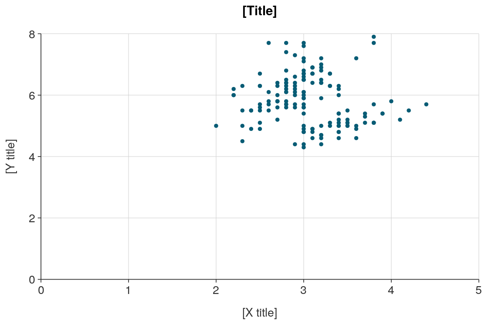
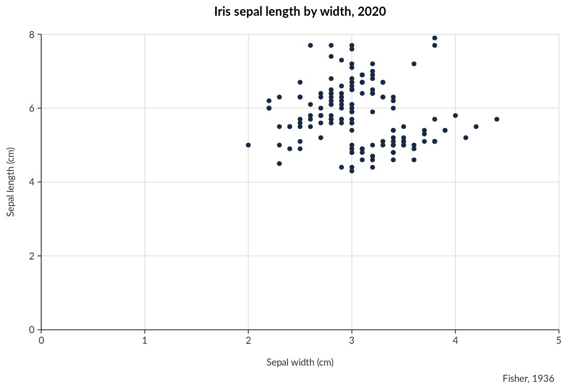
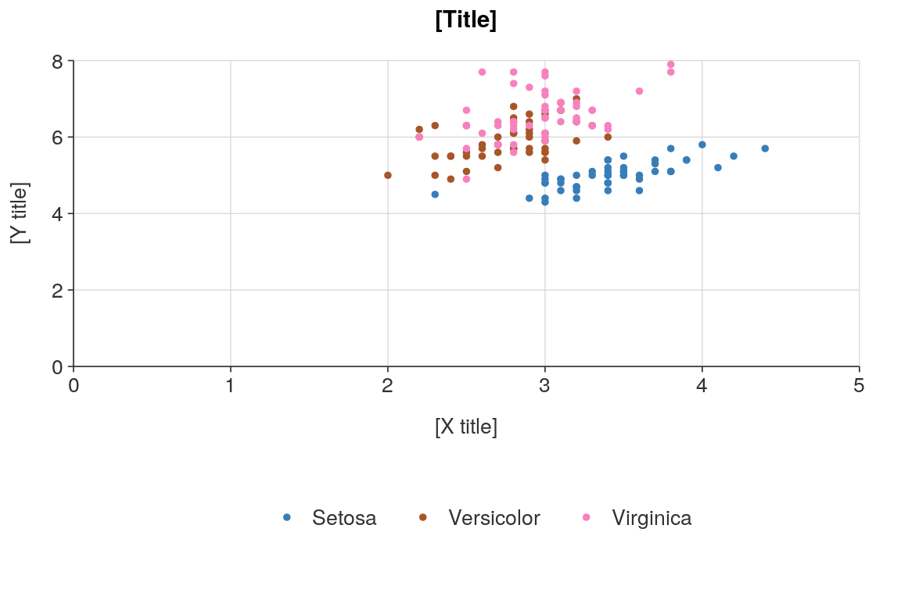
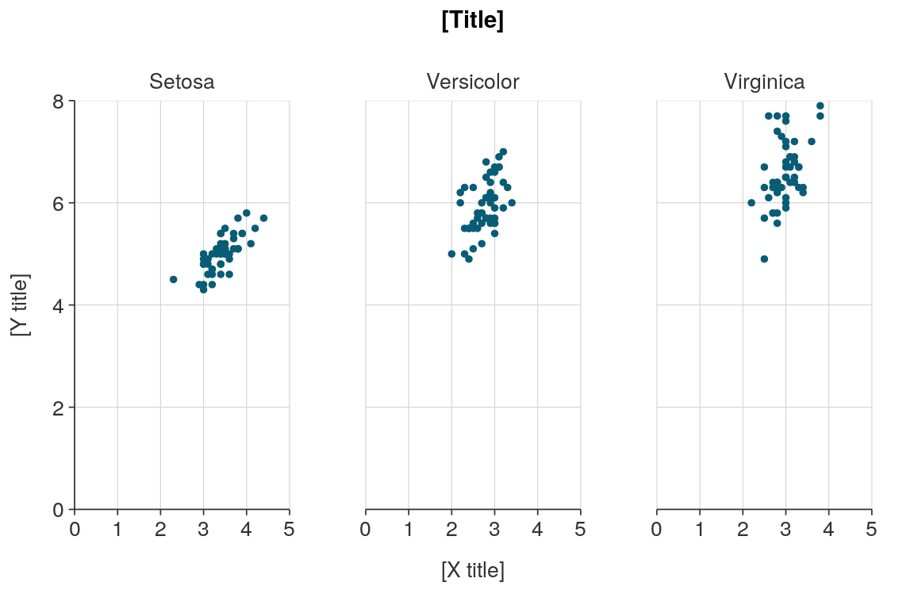
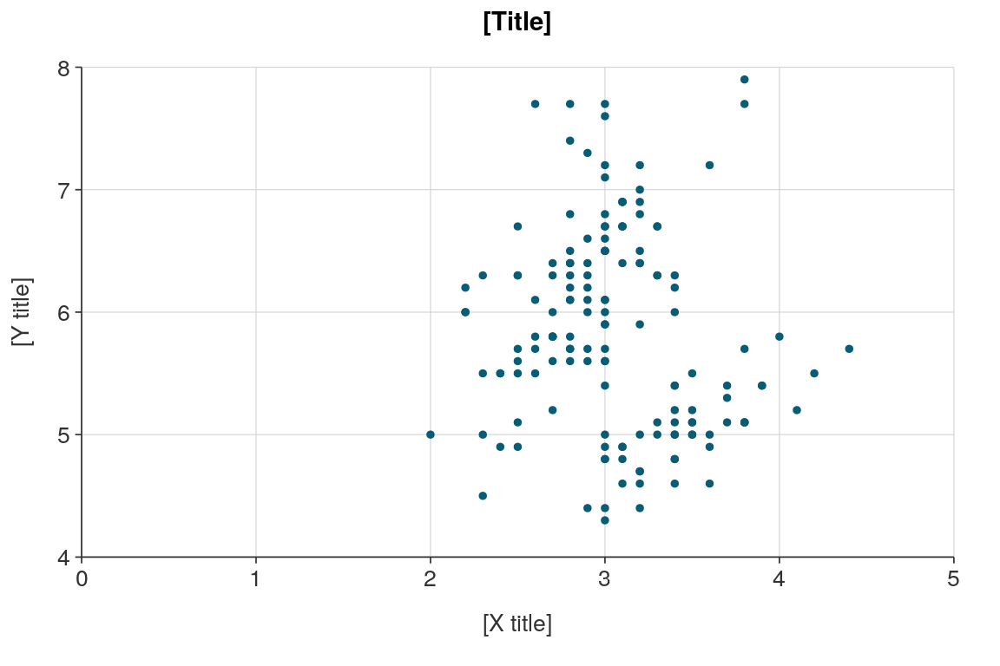
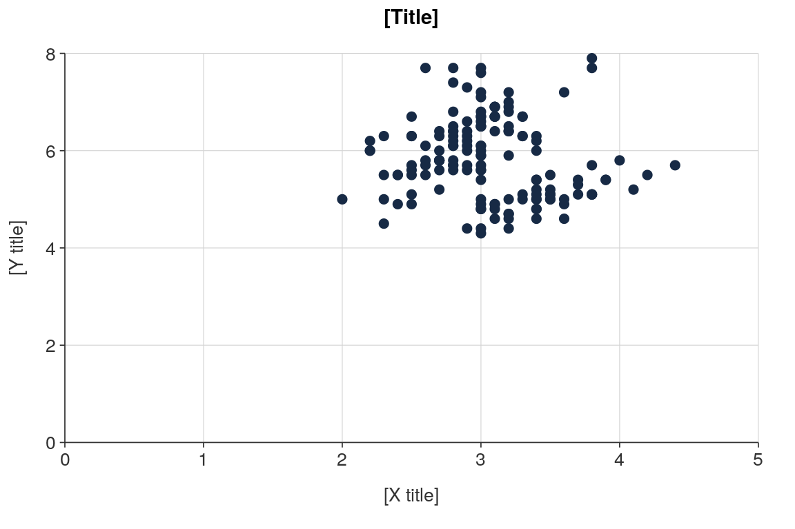
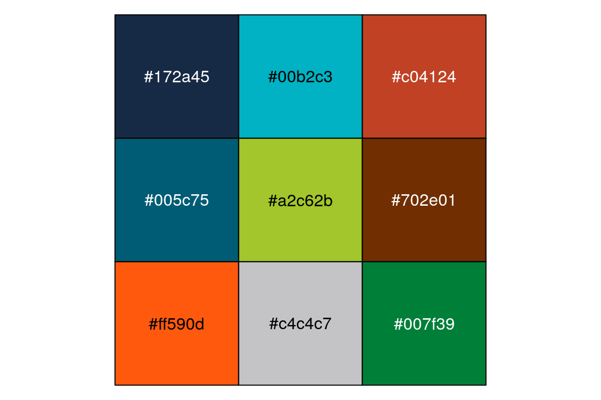
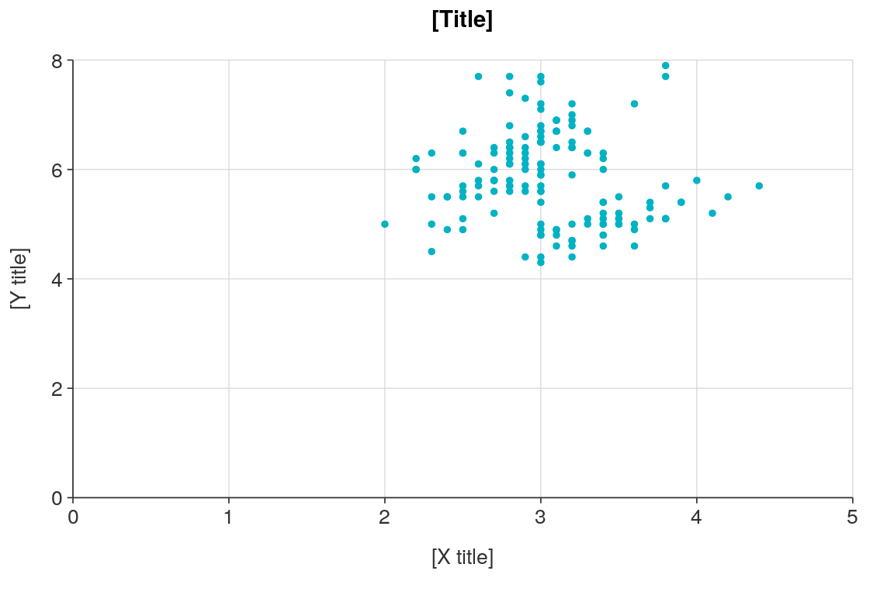
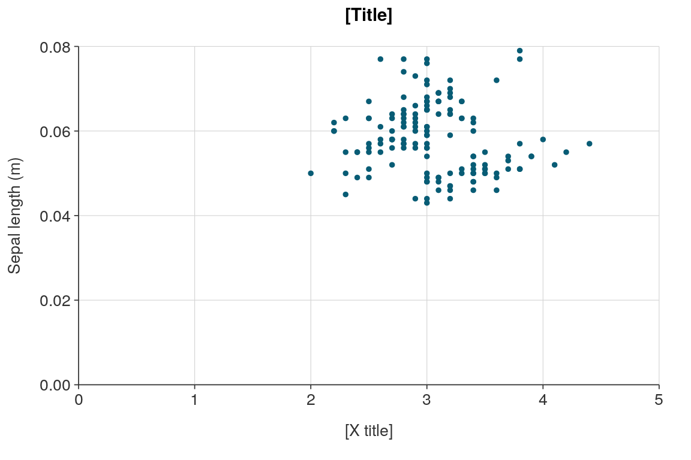
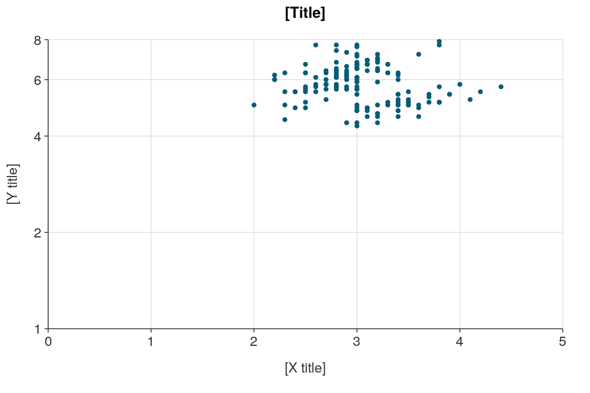

library(dplyr) library(simplevis) # load dplyr, convert the iris data to a tibble so it's easier to print iris <- iris %>% as_tibble() %>% janitor::clean_names() %>% mutate(species = stringr::str_to_sentence(species)) iris #> # A tibble: 150 x 5 #> sepal_length sepal_width petal_length petal_width species #> <dbl> <dbl> <dbl> <dbl> <chr> #> 1 5.1 3.5 1.4 0.2 Setosa #> 2 4.9 3 1.4 0.2 Setosa #> 3 4.7 3.2 1.3 0.2 Setosa #> 4 4.6 3.1 1.5 0.2 Setosa #> 5 5 3.6 1.4 0.2 Setosa #> 6 5.4 3.9 1.7 0.4 Setosa #> 7 4.6 3.4 1.4 0.3 Setosa #> 8 5 3.4 1.5 0.2 Setosa #> 9 4.4 2.9 1.4 0.2 Setosa #> 10 4.9 3.1 1.5 0.1 Setosa #> # … with 140 more rows
# create a scatter plot of iris Sepal width and length ggplot_scatter(iris, sepal_width, sepal_length)

# add titles and adjust the fonts if necessary ggplot_scatter(iris, sepal_width, sepal_length, title = "Iris sepal length by width, 2020", x_title = "Sepal width (cm)", y_title = "Sepal length (cm)", caption = "Fisher, 1936", pal = pal_ea19, font_family = "Lato", font_size_title = 9, font_size_body = 7)

# save your ggplot to an object called plot, and then convert it to an interactive plotly object using plotly::ggplotly plot <- ggplot_scatter(iris, sepal_width, sepal_length) plotly::ggplotly(plot)
# colour the points by the species variable ggplot_scatter_col(iris, sepal_width, sepal_length, species)

# facet the points by the species variable ggplot_scatter_facet(iris, sepal_width, sepal_length, species)

# turn the 'zero'-ing off on the y axis ggplot_scatter(iris, sepal_width, sepal_length, y_zero = FALSE)

# use the pal_ea19 colours and increase the size of the dots ggplot_scatter(iris, sepal_width, sepal_length, size = 2, pal = pal_ea19)

# use a brighter colour from the pal_ea19 pal_ea19 #> [1] "#172a45" "#00b2c3" "#c04124" "#005c75" "#a2c62b" "#702e01" "#ff590d" #> [8] "#c4c4c7" "#007f39" scales::show_col(pal_ea19)

ggplot_scatter(iris, sepal_width, sepal_length, pal = pal_ea19[2])

# change the sepal length labels and y title to express it in metres ggplot_scatter(iris, sepal_width, sepal_length, y_labels = scales::number_format(accuracy = 0.01, scale = 1/100), y_title = "Sepal length (m)")

# transform the y scale to log10 ggplot_scatter(iris, sepal_width, sepal_length, y_trans = "log10")

# add some more breaks to the y scale plot <- ggplot_scatter(iris, sepal_width, sepal_length, tip_text, y_zero = FALSE, y_pretty_n = 10, x_zero = FALSE, x_pretty_n = 10) # make a ggplotly object with all variables in the tooltip by using the add_tip function and tip_var argument plot <- ggplot_scatter(iris, sepal_width, sepal_length) plotly::ggplotly(plot)
plot_data <- iris %>% add_tip(c("species", "sepal_width", "sepal_length", "petal_width", "petal_length")) plot <- ggplot_scatter(plot_data, sepal_width, sepal_length, tip_var = tip_text) plotly::ggplotly(plot, tooltip = "text")